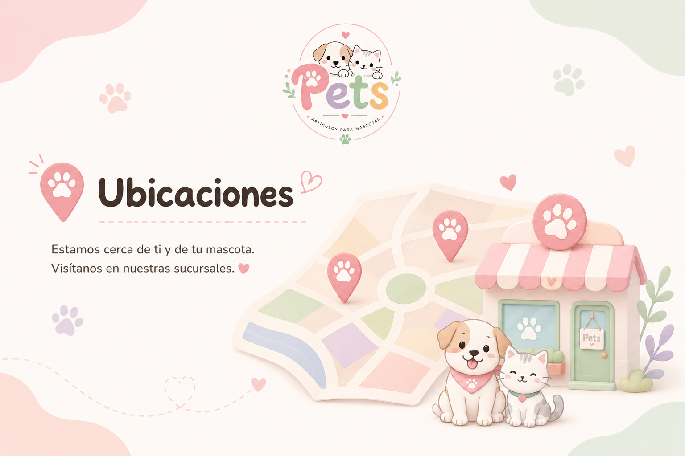

Sobre nosotros
Pets nació en 2024, gracias a la pasión
de sus fundadores por los animales y al deseo de crear un espacio donde
cada mascota pudiera encontrar productos pensados con amor y dedicación
Lo que comenzó como un pequeño proyecto familiar fue creciendo con el
tiempo hasta convertirse en una tienda dedicada a ofrecer
artículos bonitos, funcionales y de calidad para
nuestros compañeros de cuatro patas.
En Pets seleccionamos cada producto pensando en el
bienestar de las mascotas y en quienes las consideran parte de su
familia. Nuestro objetivo es entregar una experiencia cercana,
confiable y llena de cariño.
Porque en Pets creemos que ellos no son solo mascotas,
son parte de nuestra familia.
Encuéntranos
En Pets queremos estar cerca de ti y de tus mascotas.
Visítanos en cualquiera de nuestras sucursales y encuentra todo lo que
necesitas para consentir a tu compañero de cuatro patas.
Sucursal La Florida
Dirección: Av. La Florida 1111, Local 12
Horario: Lunes a sábado, 10:00 a 19:30 hrs.
Sucursal Ñuñoa
Dirección: Av. Irarrázaval 2222, Local 8
Horario: Lunes a sábado, 10:00 a 20:00 hrs.
